Tap 2 Pay: Money Moves on a Tap
Payments from your wrist, designed for speed and simplicity.
Tap 2 Pay is a wearable payment experience designed for Apple Watch, enabling users to make secure and seamless payments directly from their wrist. The solution focuses on speed, convenience, and simplicity, reducing the need to reach for a smartphone during everyday transactions.

UX Process
From Challenge to Solution: Designing a Seamless Payment Experience for Apple Watch
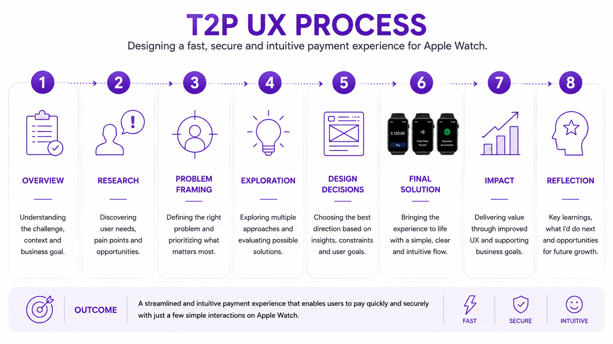
Overview
Understanding The Challenge
The Story
Imagine standing in a checkout line with your hands full. Reaching for a phone, unlocking it, opening a payment app, and completing a transaction suddenly feels like too much effort.
Smartwatches promise convenience, but most payment experiences are still designed with mobile-first thinking.
This raised a question:
How might we create a payment experience that truly feels native to a wearable device?
Challenge
Traditional mobile payment patterns don't translate effectively to smartwatch environments due to limited screen space, shorter interaction sessions, and wearable-specific interaction behaviors.
Goal
Design a fast, intuitive, and wearable-first payment experience for Apple Watch users.
Research
Discovering User Needs
Before designing screens, I wanted to understand what makes wearable experiences fundamentally different from mobile experiences.
Instead of asking what information users need, I searched for:
What information can be safely removed?
Reviewing Apple Watch guidelines and existing payment experiences revealed a common theme: users interact with smartwatches differently than phones.
Key Findings
1
Limited Screen Space
Users can only consume a small amount of information at a glance.
2
Need For Speed
Interactions are expected to be completed within seconds.
3
Wearable Interactions
Navigation and actions must feel effortless and lightweight.
Problem Framing
Defining What Matters Most
The research revealed that the challenge wasn't adding more functionality. This shifted the focus from feature design to experience simplification.
The real challenge was reducing friction. Every additional tap, screen, or decision increased effort on a device designed for quick interactions.
Problem Statement
Apple Watch users need a faster and simpler way to complete payments because traditional payment experiences introduce unnecessary complexity within a small-screen environment.
Design Principles
The problem statement highlighted the need for a faster and simpler payment experience. To translate these insights into actionable design decisions, I defined four guiding principles that would shape the overall user experience.
Prioritize speed
Reduce cognitive load
Surface essential information only
Design for glanceable interactions
Exploration
Evaluating Possible Solutions
01. Experience Strategy
With the problem clearly defined, the next step was turning insights into a structured experience. The goal was to translate user needs and business objectives into a clear, intuitive transfer flow optimized for the Apple Watch experience.
02. Journey Mapping
Rather than designing screens immediately, I first explored how users would move through the transfer journey, what information they would need at each stage, and how the experience could remain intuitive within the on Apple Watch.
03. Experience Foundation
By mapping the journey, defining navigation paths, organizing information, and exploring layouts, I established the foundation for a streamlined wearable-first transfer experience focused on speed and simplicity.
User Journey: Mapping The User's Path
Before defining screens and interactions, I mapped the end-to-end transfer journey to understand user goals, expectations, and potential friction points. This helped identify opportunities to simplify actions, reduce effort, and ensure users could complete transfers confidently on a small screen.
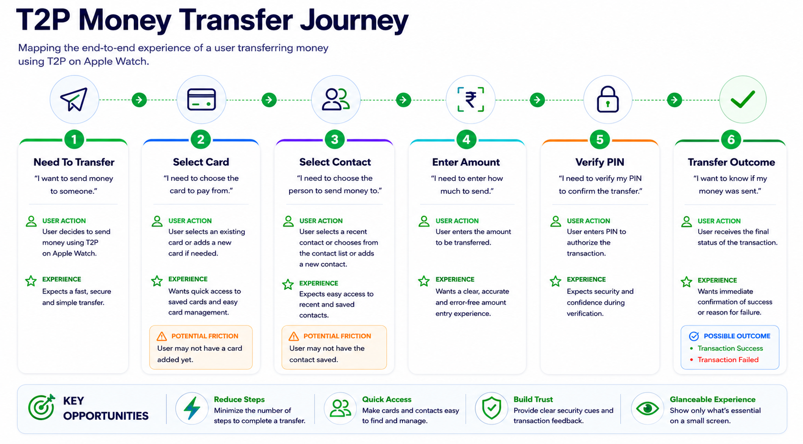
Key Opportunities
- Reduce interaction steps
- Enable quick card selection
- Simplify contact access
- Build trust through verification
- Provide clear transaction feedback
User Flow : Understanding The Payment Experience
With the journey defined, I visualized how users would navigate through the transfer process and the decisions they would encounter along the way. The flow helped identify alternate paths such as adding a new card, adding a contact, and handling transaction failures while maintaining a seamless transfer experience.
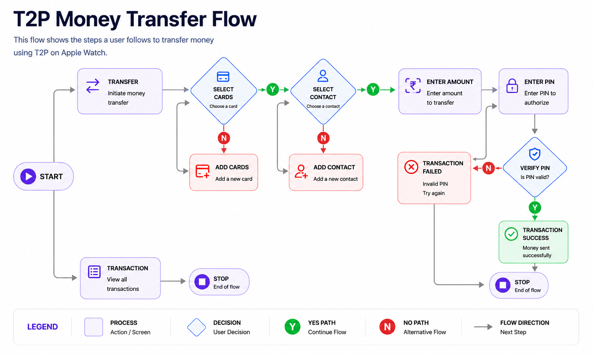
What The Flow Helped Validate
- Primary transfer path
- Alternate user scenarios
- Success and failure states
- Security verification process
Information Architecture : Organizing Information For Small Screens
Once the navigation flow was established, I organized the information architecture to determine what content should appear at each stage of the experience. Given the limited screen space of Apple Watch, prioritizing essential information was critical to reducing cognitive load and maintaining clarity.
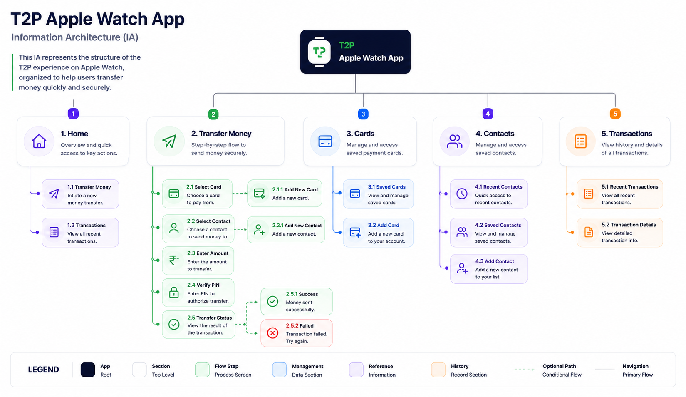
Key Considerations
- Surface essential information only
- Simplify navigation hierarchy
- Prioritize frequent actions
- Reduce visual clutter
Wireframes : Exploring Layouts & Interactions
I translated the flow and information structure into low-fidelity wireframes to evaluate layout options, interaction patterns, and content placement. These wireframes allowed rapid exploration before investing time in visual design.
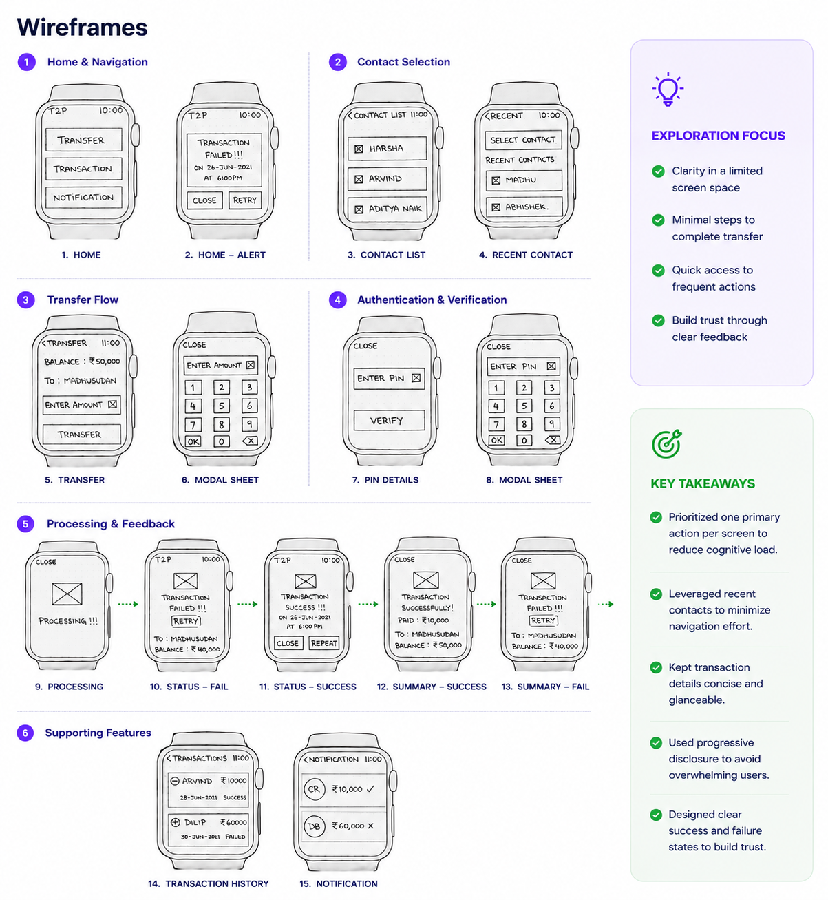
What Was Validated
- Navigation flow
- Information hierarchy
- Action placement
- Screen-to-screen transitions
Exploration Outcome
The exploration phase helped transform research insights into a structured solution by
validating how users would navigate, consume information, and complete payments within the
constraints of a wearable device.
This foundation directly informed the final design decisions and visual direction of the T2P
experience.
Design Decisions
Choosing The Best Direction
Every design decision was evaluated against a simple question:
"Does this make the payment experience faster and easier?"
If the answer was no, it didn't make it into the final design.
01
Simplified Payment Flow
Reduced unnecessary steps to support quick task completion.
02
Strong Visual Hierarchy
Highlighted primary actions and essential payment information.
03
Minimal Information Display
Presented only what users needed in the current moment.
04
Wearable-First Interactions
Designed for smartwatch behavior rather than adapting mobile conventions.
Final Solution
Bringing The Experience To Life
The final experience is designed around three principles: speed, clarity, and confidence.
Every interaction is intentionally simplified so users can transfer money with minimal effort while staying informed throughout the transaction. Rather than presenting multiple actions on a single screen, each interface focuses on one clear task, making the experience intuitive for the Apple Watch's small display.
Solution Highlights
- Quick payment initiation
- Simplified navigation
- Faster recipient selection
- Secure transaction verification
- Clear success & failure feedback
- Wearable-first interaction design
Transfer Journey
A seamless, step-by-step flow designed specifically for the Apple Watch, allowing users to send money in seconds.
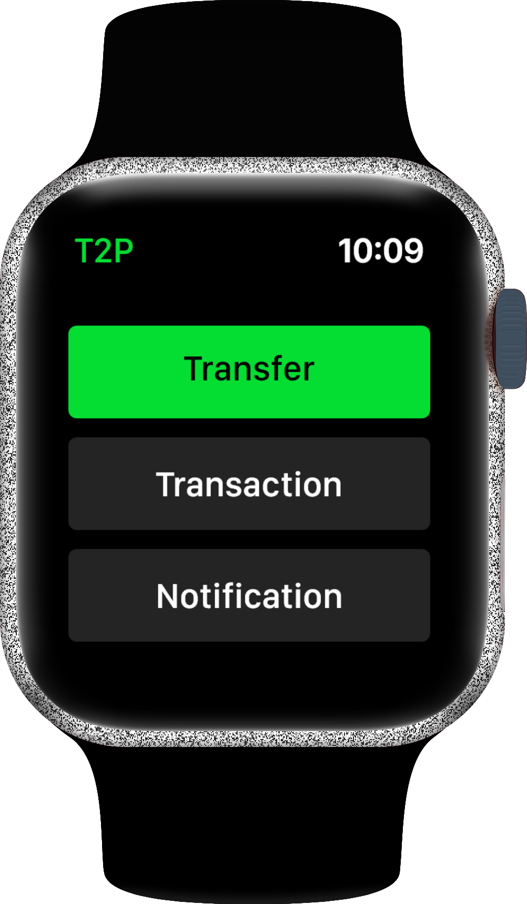
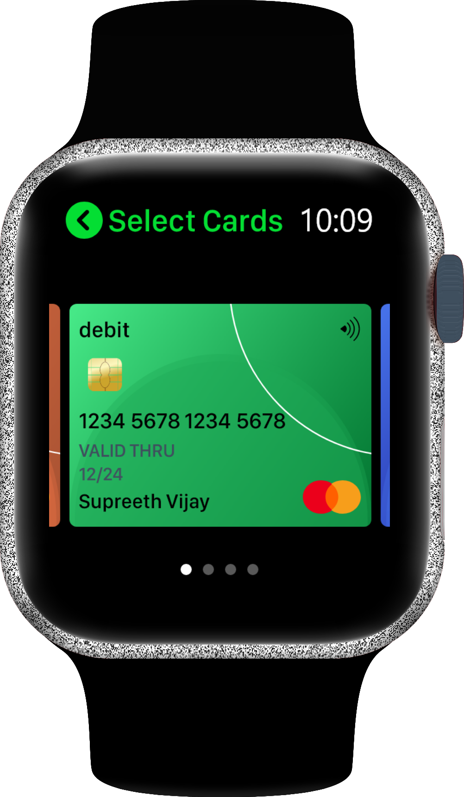
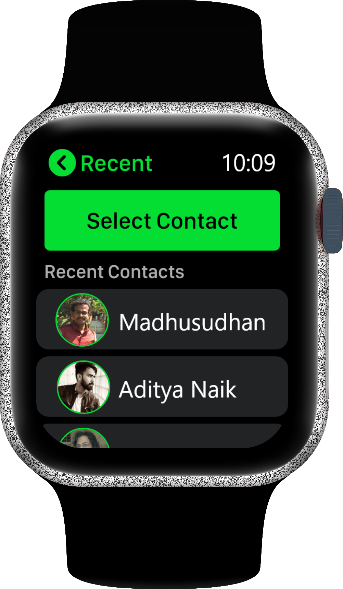
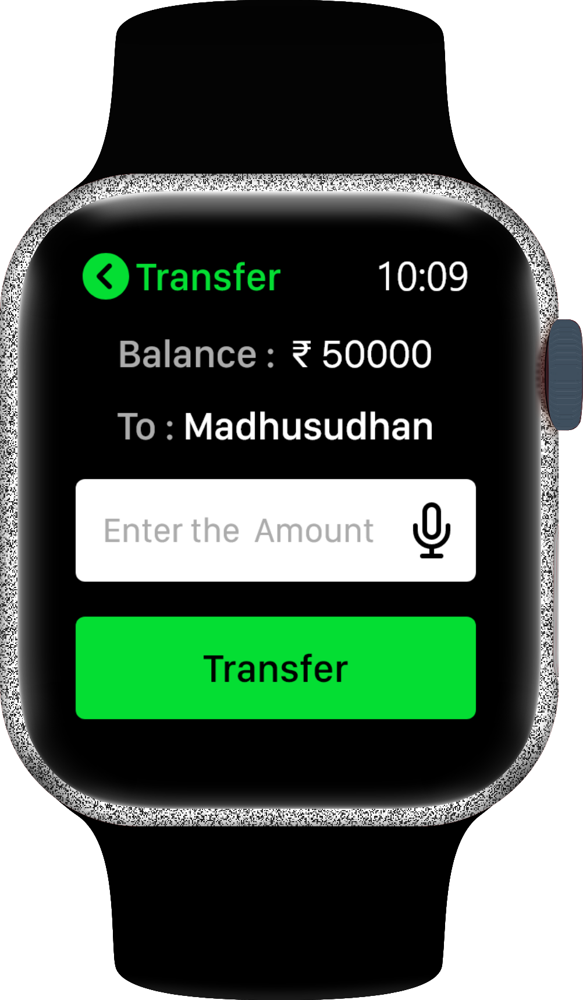
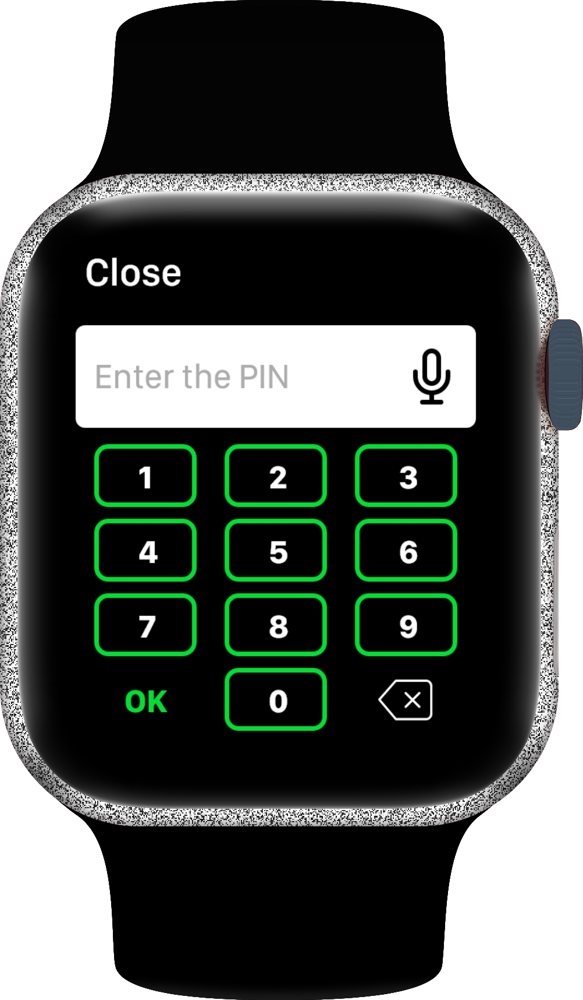
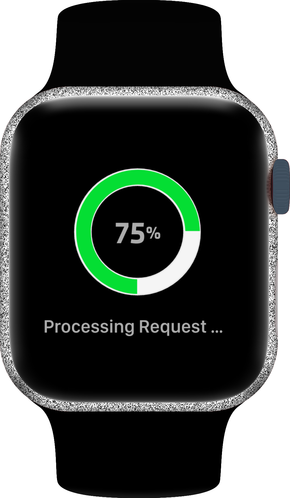
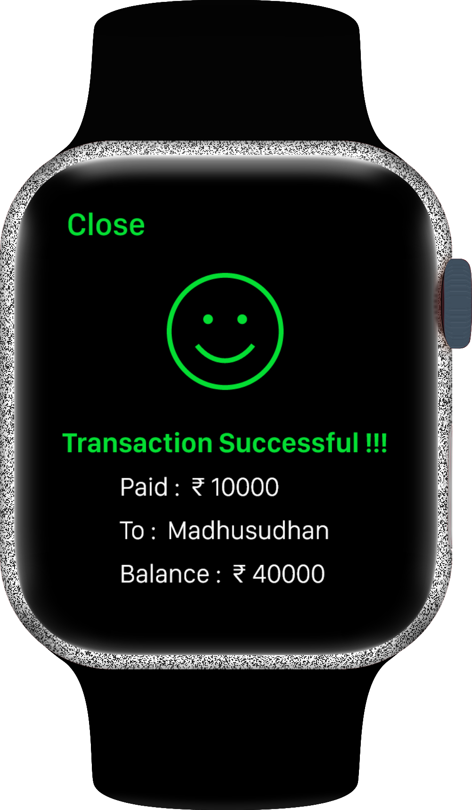
1. Initiate The Transfer Process
Goal
Enable users to start a money transfer quickly with minimal navigation.
Design Decisions
- Prioritized the Transfer action on the Home screen.
- Surfaced saved payment cards for faster selection.
- Displayed recent contacts first to reduce search effort.
- Minimized navigation by keeping the initial flow concise.
Transfer
Choose Contact
Choose Card
2. Review The Payment
Goal
Help users review payment details and enter the transfer amount with confidence.
Design Decisions
- Presented only essential payment information.
- Highlighted recipient details before proceeding.
- Kept amount entry focused and distraction-free.
- Reduced cognitive load by limiting information per screen.
Enter Amount
Transfer
3. Authenticate The Transaction
Goal
Provide a secure yet seamless verification experience before processing the payment.
Design Decisions
- Used a familiar PIN-based authentication flow.
- Kept verification simple with a dedicated screen.
- Provided immediate processing feedback after authentication.
- Reinforced user confidence through clear system status.
Enter PIN
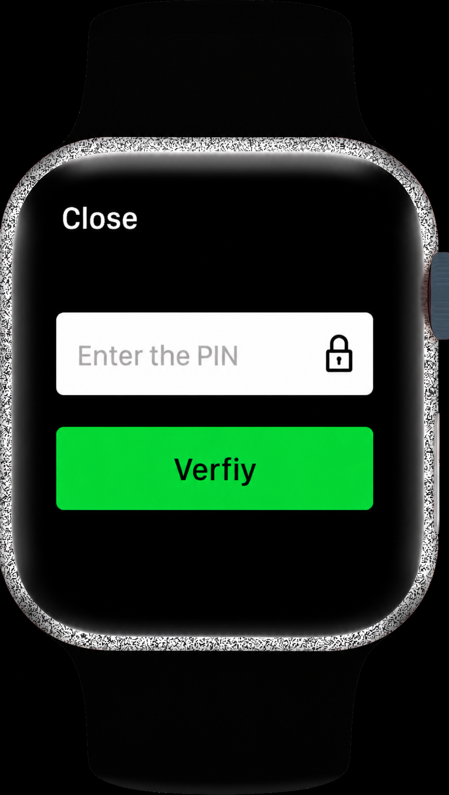
Verify PIN
Processing
4. Complete The Transaction
Goal
Clearly communicate the payment outcome and reassure users that the transfer was successful.
Design Decisions
- Displayed instant success confirmation.
- Used visual feedback to reinforce completion.
- Kept confirmation concise and easy to understand.
- Enabled users to quickly return to the app or continue with other tasks.
Success
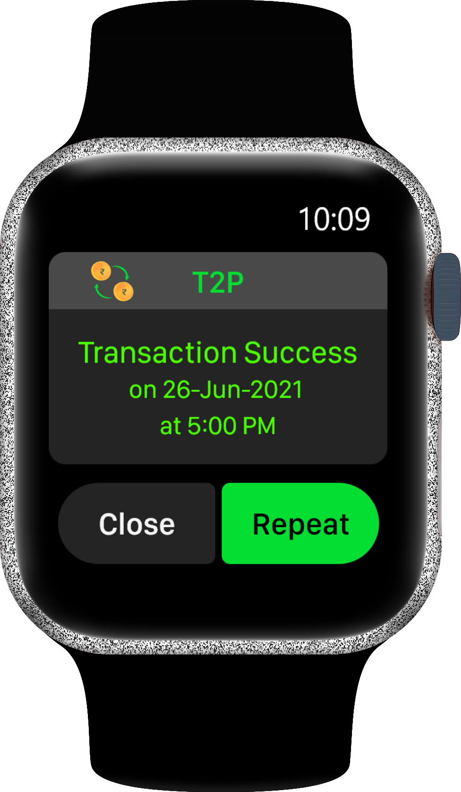
Transaction Details6. Supporting Experiences
Goal
Provided users with supporting features that improve visibility, accessibility, and confidence throughout the payment experience.
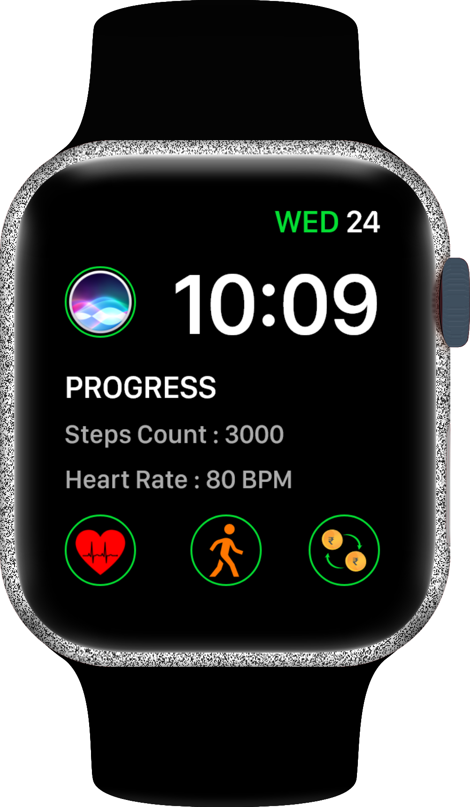
Complication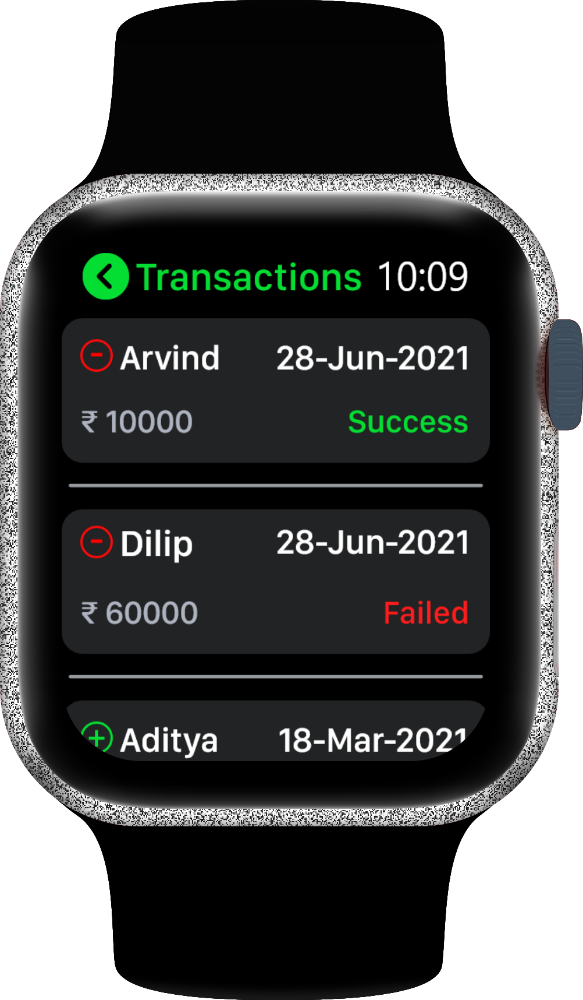
Transaction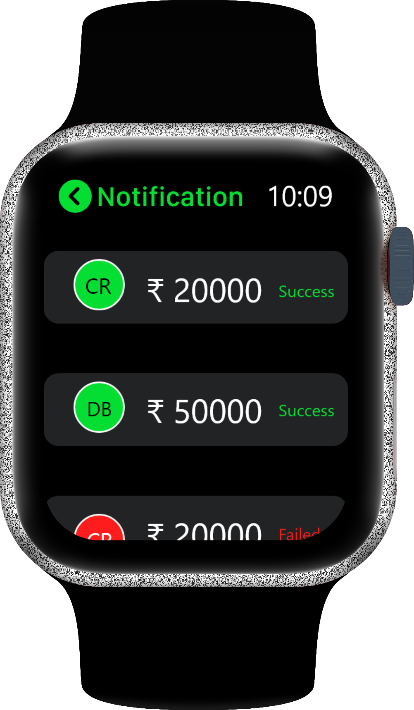
Notification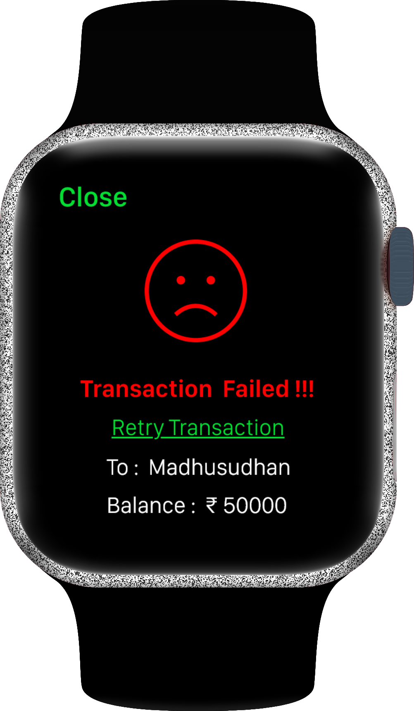
Failure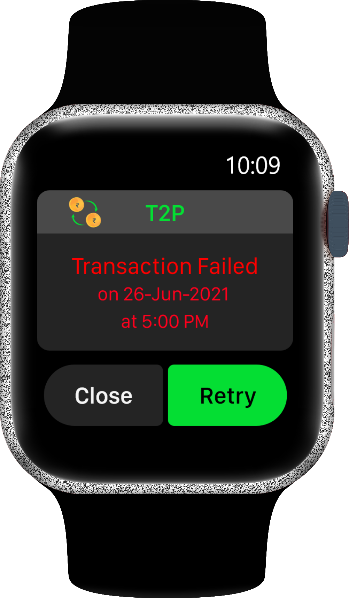
Transaction DetailsDesign Decisions
- Included Transaction History for quick access to previous payments.
- Designed Notifications to keep users informed about successful and failed transfers.
- Added an Apple Watch Complication for one-tap access directly from the watch face.
- Created dedicated Failure States with clear feedback and a Retry option to simplify recovery.
- Maintained consistent visual patterns, colors, and interactions across all supporting screens.
- Maintained a seamless flow between payment, tracking, and recovery.
UX & Business Impact
Measuring Design Success Beyond the Interface.
UX Impact
- Reduced cognitive load
- Faster task completion
- Improved usability on small screens
- Increased user confidence during transactions
Business Impact
- Higher payment completion potential
- Reduced transaction abandonment
- Increased wearable payment adoption
- Improved customer satisfaction
Impacts are based on design intent and industry best practices, as this was a workshop project without live user testing.
Key Learnings
Reflecting on the Design Journey
What I Learned
- Designing for constraints requires prioritization.
- Simplicity often improves usability more than adding features.
- Wearable experiences demand speed and clarity.
What I'd Improve Next
- Conduct usability testing with Apple Watch users.
- Validate interaction patterns through prototypes.
- Explore accessibility and haptic feedback enhancements.
- Measure task completion and usability metrics.
Discover More Stories
A collection of research-led designs across AI, Enterprise SaaS, and Financial ecosystems.


CalmBridge
Bridging the gap between work-life transition and remote worker well-being.
View Case Study →
Senior Citizen App
Designing an accessible, inclusive mobile experience that empowers seniors with confidence and independence.
View Case Study →Let’s Connect
Open for opportunities, collaborations, and meaningful design conversations.
Based in Bengaluru, India